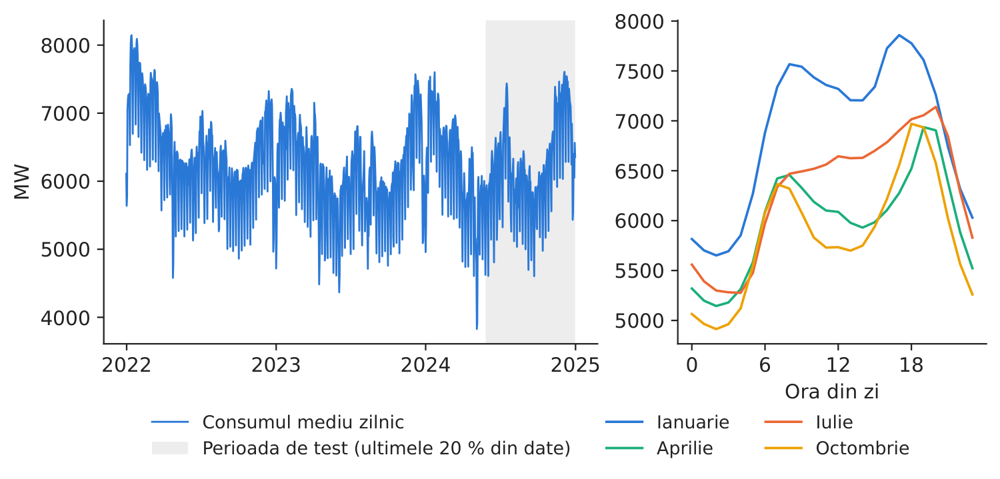
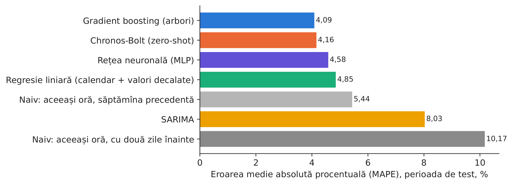
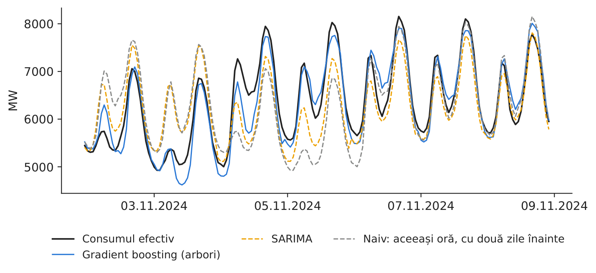
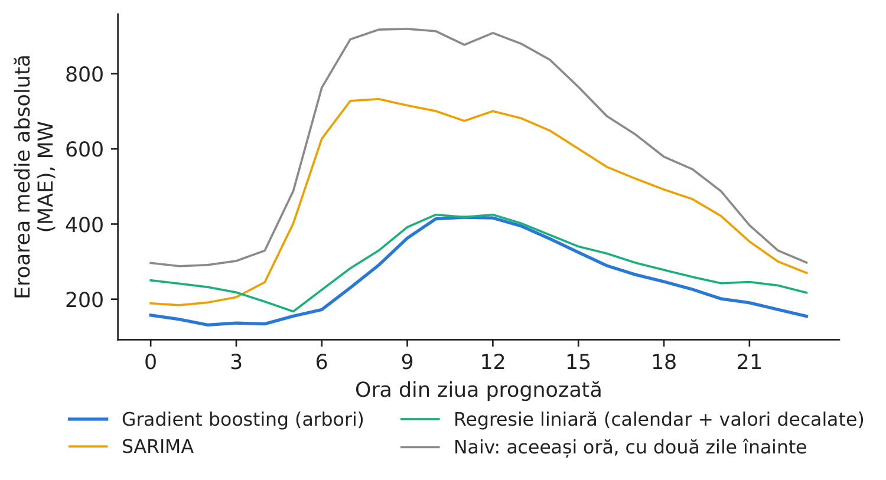

Studiul de caz 2 · Cursul 2
Watt's next? Prognoza consumului național pentru ziua următoare
Prof. dr. Daniel Traian PELE
Academia de Studii Economice din București, Departamentul de Statistică și Econometrie
Academia Română, Institutul de Prognoză Economică
Lucrarea de referință
Proșcanu, C. A., Proșcanu, M. E., Pele, D. T. și Costea, A. (2025). Watt’s next? Benchmarking time series models on Romania’s national electricity consumption. Romanian Journal of Economic Forecasting, 28(3), 146–163. RePEc:rjr:romjef:v::y:2025:i:3:p:146-163
Problema decizională
În fiecare dimineață, un furnizor din România sau echipa de echilibrare a unui producător trebuie să transmită operatorului de transport și de sistem (OTS), Transelectrica, notificarea privind volumul pe care îl va consuma sau livra în fiecare oră din ziua următoare. Fiecare MWh de eroare se transformă într-un dezechilibru, decontat de regulă la un preț mai dezavantajos decît cel de pe piața pentru ziua următoare (PZU). Directorul de tranzacționare trebuie să decidă: ce model de prognoză folosim în activitatea curentă — un model sezonier clasic, un model de învățare automată sau un model fundamental preantrenat (foundation model) — și justifică îmbunătățirea acurateței costul implementării?
Lucrarea de referință
Întrebarea de cercetare. Lucrarea compară modele de prognoză univariate aplicate consumului național de energie electrică al României, (1) din punctul de vedere al acurateței (MSE, eroarea pătratică medie, MAE, eroarea absolută medie, \(R^2\)) și (2) din punctul de vedere al efectului pe care îl are arhitectura modelului (p. 147).
Datele. Consumul național orar, 1 ianuarie 2022 – 31 decembrie 2024, 26.304 observații, în MWh (sistemulenergetic.ro); media 6.230,59, minimul 2.871,75, maximul 9.210,75 (Tabelul 1, p. 149). Consumul este minim între orele 2 și 5 și atinge vîrful în jurul orei 19; lunile de iarnă au cel mai mare consum (p. 150).
Metoda. Nouă modele: SARIMA (model autoregresiv integrat cu medie mobilă, cu componentă sezonieră), rețelele neuronale N-BEATS, NHITS (Neural Hierarchical Interpolation for Time Series), LSTM (Long Short-Term Memory, rețea recurentă cu memorie de lungă durată), Mamba, Titans și RetNet, precum și două modele fundamentale preantrenate, folosite fără reantrenare pe datele românești (zero-shot): Chronos-T5 și TimesFM (Time Series Foundation Model). Fereastra de intrare are 168 de ore, orizontul de prognoză 24 de ore, iar eșantionul este împărțit cronologic în proporția 80/20 (Tabelul 3, p. 157).
Principalele rezultate ale lucrării.
- Cel mai performant model este N-BEATS, cu MAPE (eroarea procentuală absolută medie) 2,324 % și cel mai mare coeficient de determinare (\(R^2 = 0{,}956\)) (p. 158; Tabelul 4, p. 157). Față de SARIMA, N-BEATS reduce MAPE de la 3,63 % la 2,32 % (p. 159).
- RetNet și Titans au, de asemenea, performanțe foarte bune (p. 158–159).
- TimesFM are în mod constant rezultate mai slabe (MAPE 5,895 %, \(R^2 = 0{,}673\)); Chronos-T5 este cel mai rapid (7 secunde), cu MAPE 3,325 % (p. 159; Tabelul 4).
- SARIMA rămîne o opțiune viabilă și eficientă atunci cînd resursele de calcul sînt limitate; modelele neuronale sînt potrivite pentru planificarea capacităților și integrarea surselor regenerabile (p. 160).
Metoda, pas cu pas
Intuiția metodei
Consumul are un caracter repetitiv: profilul orar se repetă de la o zi la alta, sfîrșitul de săptămînă aduce un consum mai redus, iar iernile sînt reci în fiecare an. Un model de prognoză preia tiparul potrivit din trecut și îl ajustează. Modelele simple preiau un singur tipar („acum două zile”, „săptămîna trecută”); modelele mai bune învață care ore din trecut sînt relevante și cu ce pondere.
Fie \(L_{d,h}\) consumul (MW) în ora \(h\) a zilei \(d\). La închiderea porții, ora 12:00 CET (ora Europei Centrale) în ziua \(d-1\), prognozăm cele 24 de valori \(\hat L_{d,0},\dots,\hat L_{d,23}\). În acel moment, consumul este măsurat numai pînă la sfîrșitul zilei \(d-2\), de aceea:
- fiecare model folosește date de consum numai pînă în ziua \(d-2\) (decalaje de cel puțin 48 de ore, plus \(d-7\));
- nu se folosește nicio valoare din ziua \(d-1\), nici măcar media ei zilnică.
Prognozele naive sînt \(\hat L_{d,h}=L_{d-2,h}\) (cu două zile înainte) și \(\hat L_{d,h}=L_{d-7,h}\) (aceeași zi din săptămîna precedentă). Modelul SARIMA\((1,0,1)(1,1,1)_{24}\) descrie diferența pe 24 de ore, \(L_t-L_{t-24}\), în funcție de valorile și de erorile sale anterioare. Regresia liniară și modelul gradient boosting (un ansamblu de arbori de decizie mici, fiecare estimat pe erorile celor anteriori) folosesc consumul decalat (cu 48, 72, 168 și 336 de ore), media zilei \(d-2\), ora, ziua săptămînii, luna și zilele de sărbătoare. Rețeaua neuronală transformă direct cele 168 de ore de pînă la sfîrșitul zilei \(d-2\) în prognoza pentru cele 24 de ore ale zilei \(d\). Chronos-Bolt este un model preantrenat pe un număr mare de serii de timp publice; preia cele 512 ore de pînă la sfîrșitul zilei \(d-2\) și furnizează cuantilele prognozei fără a fi antrenat pe datele noastre (zero-shot). Acuratețea se măsoară pe toate cele \(N\) ore din perioada de test, cu indicatorii
În practică
Alegerea modelului are o miză financiară: volumul anual al dezechilibrelor \(\approx\) MAE \(\times\) 8.760 de ore \(\times\) cota dumneavoastră de piață; înmulțit cu costul dezechilibrului pe MWh, acesta dă costul anual. Un model merită introdus în activitatea curentă dacă economia astfel obținută depășește costurile de operare și de întreținere.
Replicare pe datele cursului
Notebook-ul C2_notebook_RO.ipynb folosește consumul orar publicat de ENTSO-E (Rețeaua europeană a operatorilor de transport și de sistem pentru energie electrică), preluat de pe energy-charts.info (generation_ro_mw_hourly_utc.csv), același eșantion ca lucrarea și aceeași împărțire 80/20; perioada de test începe la 27.05.2024 (217 zile de prognoză).
Seria noastră reproduce Tabelul 1 din lucrare: 26.304 ore, media 6.230,90 MW, minimul 2.871,75, maximul 9.210,75 — sînt aceleași măsurători Transelectrica, publicate de două surse.

Figura 1. Consumul mediu zilnic și perioada de test (stînga); profilul orar mediu, pe luni (dreapta).
Sursa: energy-charts.info (ENTSO-E); 1.1.2022–31.12.2024.

Figura 2. MAPE pe perioada de test, pe modele.
Sursa: prognozele noastre; perioada de test 27.05.2024–31.12.2024.
Tabelul 1. Acuratețea prognozelor pentru ziua următoare în perioada de test, 217 zile \(\times\) 24 de ore. Cea mai bună valoare este marcată cu aldine (pentru abatere, valoarea cea mai apropiată de zero).
| Model | MAE, MW | RMSE (rădăcina erorii pătratice medii), MW | MAPE, % | \(R^2\) | Abatere, MW |
|---|---|---|---|---|---|
| Gradient boosting (arbori) | 250 | 339 | 4,09 | 0,879 | 32 |
| Chronos-Bolt (zero-shot) | 254 | 360 | 4,16 | 0,863 | 43 |
| Rețea neuronală (MLP, perceptron multistrat) | 284 | 393 | 4,58 | 0,837 | 80 |
| Regresie liniară (calendar + valori decalate) | 292 | 383 | 4,85 | 0,845 | 19 |
| Naiv: aceeași oră, săptămîna precedentă | 335 | 474 | 5,44 | 0,762 | 17 |
| SARIMA | 483 | 634 | 8,03 | 0,575 | 34 |
| Naiv: aceeași oră, cu două zile înainte | 610 | 825 | 10,17 | 0,280 | 18 |
Sursa: calcule proprii; abaterea = media diferenței dintre valoarea efectivă și prognoză.

Figura 3. O săptămînă de prognoze în noiembrie 2024.
Sursa: prognozele noastre; energy-charts.info.

Figura 4. MAE pe orele zilei prognozate.
Sursa: prognozele noastre; perioada de test.
Rezultatul replicării. În perioada noastră de test, cel mai bun model este Gradient boosting (arbori), cu MAPE 4,09 % (MAE 250 MW, \(R^2 = 0,879\)), urmat îndeaproape de Chronos-Bolt, folosit fără reantrenare (4,16 %). Regula naivă „acum două zile” are MAPE 10,17 %, iar regula „săptămîna trecută” 5,44 %; modelul SARIMA ajunge la 8,03 %, deoarece parametrii săi sînt estimați pe 8 săptămîni și rămîn neschimbați pe toată perioada de test, astfel că nu se adaptează la sărbători și la sezonul de vară. Ca și în lucrare, un model preantrenat folosit fără reantrenare este competitiv, iar ierarhia modelelor depinde de indicatorul de eroare ales. Intervalul dintre cuantilele de 10 % și 90 % ale modelului Chronos-Bolt a cuprins consumul efectiv în 85,1 % din ore (nivelul-țintă este 80 %). Rezultatele depind de perioada de test, de momentul prognozei și de versiunile modelelor folosite; ierarhia este stabilită ex post („cel mai bun” model este identificat chiar pe perioada de test), de aceea economia de mai jos este o estimare superioară. Cifra relevantă pentru decizie: pentru un furnizor cu 10 % din consumul național și un cost ilustrativ al dezechilibrului de 50 EUR/MWh, trecerea de la regula naivă la cel mai bun model reduce costul anual al dezechilibrelor de la 26,70 la 10,94 milioane EUR (o economie de 15,76 milioane EUR).
Întrebări pentru discuție
- Pornind de la cadrul de comparație din lucrare, de ce informații ați avea nevoie înainte de a alege modelul care va fi folosit în activitatea curentă: performanța pe sezoane, costul dezechilibrelor, timpul de calcul sau efortul de întreținere?
- Un model preantrenat nu trebuie antrenat pe datele dumneavoastră. Ce riscuri presupune să vă bazați pe un model pe care nu îl puteți analiza în detaliu sau reantrena?
- În ce ore ale zilei apar cele mai mari erori (Figura 4) și sînt acestea orele cele mai costisitoare pentru portofoliul dumneavoastră?
- Consumul național are o evoluție netedă; portofoliul dumneavoastră (cîteva sute de clienți, panouri fotovoltaice pe acoperișuri) nu are. Cum credeți că s-ar modifica ierarhia modelelor?
- Justifică o reducere a MAPE cu un punct procentual costul unei echipe de analiză a datelor? Folosiți cifra relevantă pentru decizie de mai sus, cu propria cotă de piață și propriul cost al dezechilibrului.
Limitele replicării
(i) Modelele noastre sînt univariate: nu includ variabile meteorologice sau economice. (ii) Folosim o singură perioadă de test (sfîrșitul lunii mai – decembrie 2024); ierarhia modelelor se poate schimba de la un sezon la altul. (iii) Consumul național nu reflectă direct creșterea rapidă a producției fotovoltaice a prosumatorilor; portofoliul unui furnizor are o variabilitate mai mare. (iv) Costul dezechilibrului de 50 EUR/MWh este o ipoteză ilustrativă, nu o statistică de piață. (v) Rețeaua neuronală și versiunea Chronos folosite sînt implementări compacte, alese pentru a putea rula la curs.
Studiul de caz 2 pe scurt
- ÎntrebareCe model ar trebui să prognozeze consumul orar de mîine și justifică îmbunătățirea costul?
- DateConsumul național orar 2022–2024 (26.304 h), aceeași serie ca în lucrare; ultimele 20 % din date pentru test.
- MetodăNaiv, SARIMA, regresie, gradient boosting, rețea neuronală, Chronos zero-shot; MAE, MAPE, \(R^2\).
- RezultatCel mai bun: Gradient boosting (arbori), MAPE 4,09 % față de 10,17 % pentru regula naivă. Lucrarea: N-BEATS 2,324 % față de SARIMA 3,63 %.
- DecizieIntroduceți un model modern dacă economia la costul dezechilibrelor (\(\approx\)15,76 mil. EUR/an pentru un furnizor cu 10 %) depășește costul acestuia.

Sursa: prognozele noastre pe datele de consum de pe energy-charts.info (ENTSO-E); perioada de test 27.05.2024–31.12.2024.
Abrevieri
| ARIMA | model autoregresiv integrat cu medie mobilă |
|---|---|
| CET | ora Europei Centrale |
| ENTSO-E | Rețeaua europeană a operatorilor de transport și de sistem pentru energie electrică |
| LSTM | Long Short-Term Memory |
| MAE | eroarea absolută medie |
| MAPE | eroarea procentuală absolută medie |
| MLP | perceptron multistrat |
| MSE | eroarea pătratică medie |
| NHITS | Neural Hierarchical Interpolation for Time Series |
| OTS | operatorul de transport și de sistem |
| PZU | piața pentru ziua următoare |
| RMSE | rădăcina erorii pătratice medii |
| SARIMA | ARIMA sezonier |
| TimesFM | Time Series Foundation Model |
Textul, cifrele, graficele și tabelele acestei pagini sînt cele ale studiului de caz; toate cifrele sînt calculate de notebook-ul studiului pe datele cursului.